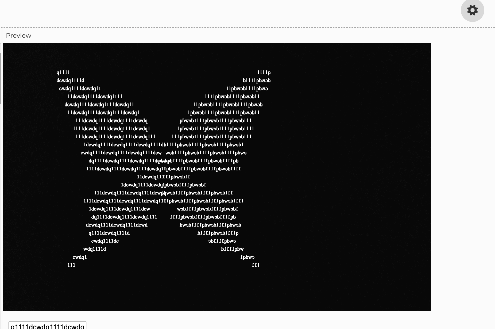
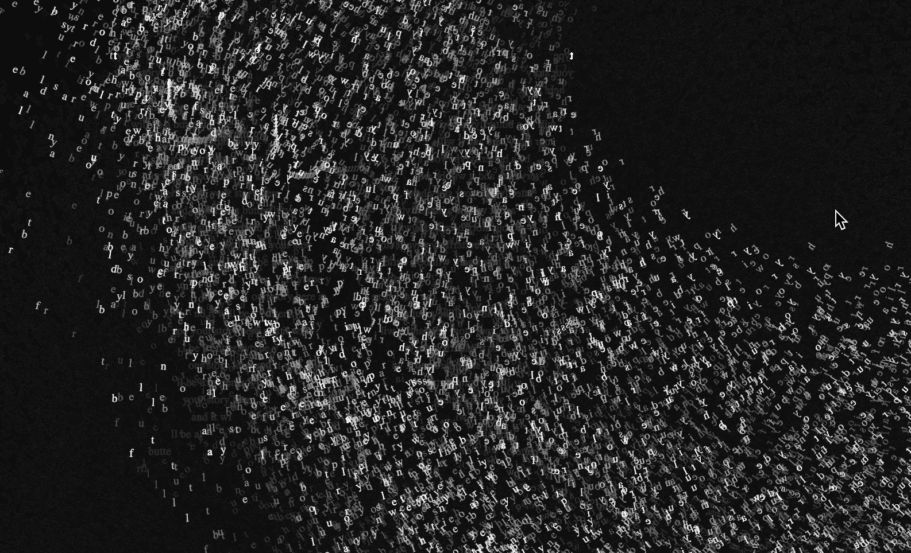

CCLab Biodiversity Atlas


Scientific Name of the Creature:
Glitter
Discovered by Sue/ at 2033:
Family:
(usually live and exsist individually, hopefully it may have a family member. )
Habitat:
being super eager for human being's touch and love
Appearance:
exactly like a butterfly but will go crazy
Key Characteristics:
- one: rely on human being's emotion and thoughts to grow
- two: only appear in a higher dimension but we can see the projection of it on our 2d screen with certain
technology
- three: dont write Chinese plz she cannot understand
What do we know so far about the creature?
know nothing though. keep it as a secret
How do we interact with this creature?
press the mouse or type in the field. Maybe the exsistence of the creature is all depend on you
A CCLab project made by Sue in 2024 Spring